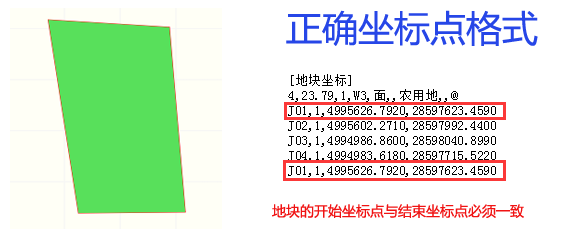

| 应用系统 | 坐标类型 |
|---|---|
| 浙江省智慧“数字征迁”监管系统 | shp格式 |
| txt格式 | |
| dwg格式 |
| 名称 | 要求 |
|---|---|
| 坐标系 | 2000国家大地坐标系 |
| 几度分带 | 3分带 |
| 坐标格式要求 | 平面直角坐标 |
| 文件类型 | 是否必须 |
|---|---|
| dbf | 必须 |
| shp | 必须 |
| prj | 必须 |
| shx | 必须 |
| sbn | 必须 |
| sbx | 必须 |
| xml | 必须 |
| cpg | 可选 |
| 坐标形式图例 | 是否导入 | 备注 |
|---|---|---|
|
[属性描述] 格式版本号= 数据生产单位= 数据生产日期= 坐标系=2000国家大地坐标系 几度分带=3 投影类型=高斯克吕格 计量单位=米 带号=40 精度=0.01 转换参数=0，0，0，0，0，0，0 [地块坐标] 142,326.65,地块1,面,,,,@ J1, 1, 3787369. 9850, 40407681. 9830 J2,1, 3787351. 2380, 40407681. 0360 |
是 | 正常格式 |
◆ 导入坐标按钮可以重复导入，最终坐标数据以最后一次导入为准；
◆ 本功能支持Shp、dwg等格式的坐标文件导入；
提示：添加压缩只针对Shp文件进行，不包括Shp文件所属的文件夹；
◆ 针对于IE 7及以下版本，将自动启用极简模式进行预览图形；
◆ 系统支持点、线、面等坐标图形预览；
问：为什么导入了多个坐标文件，但系统中只显示一个地块图形？
答：因为系统中默认只识别一个文件的坐标图形，之前导入的都会被自动覆盖。
问：为什么导入的是四边形，但是在系统中显示的是三边形？
答：因为地块坐标点缺少闭合点，需要补录后再导入即可。具体判定情况请参考下图。

问：导入加密的zip或rar压缩包失败？(系统暂停导入zip文件)
答：系统中不支持导入加密的zip或rar压缩包，请导入未加密的zip或rar压缩包。
压缩工具下载完成后，请根据系统类型安装对应压缩包工具。双击进行安装即可。